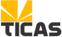

| ¿Quienes somos? | Ventas | Servicios | Soluciones | Soporte | Contacto | Inicio | |
|  | ¿Quienes Somos?
Asociación Cooperativa TICAS 073 es un
emprendimiento de un grupo de especialistas en soluciones, servicios y
soporte
Misiónen las Tecnologías de la información y de la comunicación bajo plataformas Free Software y Open Source, con su Oficina en la ciudad Mérida "Capital Tecnológica de Venezuela", Estado Mérida, Venezuela. Responder a las
necesidades de desarrollo regional y nacional, ofreciendo
Consultoría en las Tecnologías de la
información
y de la comunicación, a través de un equipo multidisciplinario altamente calificado, que se mantiene en constante actualización, sobre los últimos avances del mundo de los Sistemas Free Software y Open Source. Visión
El crecimiento constante
como cooperativa dedicada a ofrecer soluciones en las
Tecnologías de la información y de la
comunicación, por medio de soluciones adaptadas a las necesidades del mercado local, el mejoramiento de su plataforma técnológica y la optimización de su recurso humano; con le cual se espera un crecimiento de la cartera de clientes, que fortalezca finacieramente y le den renombre como cooperativa de soluciones en las TIC bajo plataformas Free Software y Open Source. Inducir a las
personas en la utilización de plataformas y aplicaciones
Free Software y Open Source en el uso cotidiano
de sus labores en el ámbito personal, laboral y/o profesional. Soporte y adiestramiento de personal de éntes empresariales y gubernamentales. Generar un sitio de encuentro y discusión para usuarios GNU/Linux nuevos o experimentados. Realizar soporte técnico y especializado bajo plataformas Free Software y Open Source. |
||||||
| Enlaces | Mapa del sitio | ||||||
| Copyleft. Algunos Derechos Reservados - Asociación Cooperativa TICAS 073 - 2005, 2006. | |||||||